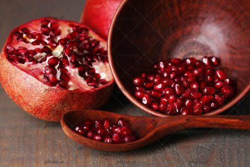

تازگی در سبد امروزتازگی، فقط یک شعار نیست
اول بررسی، بعد راهیِ سبد تو.
برای سام، انتخاب میوه از یک سؤال شروع میشود: آیا تازگیاش با معیار ما هماهنگ است؟ رسیدگی مناسب، ظاهر سالم و شرایط نگهداری، معیارهای پیشنهادی ما برای ارزیابیاند؛ تا طعم و رنگ فصل، با دقت بیشتری به سبدت برسد.
با ایده سام مارکت آشنا شو